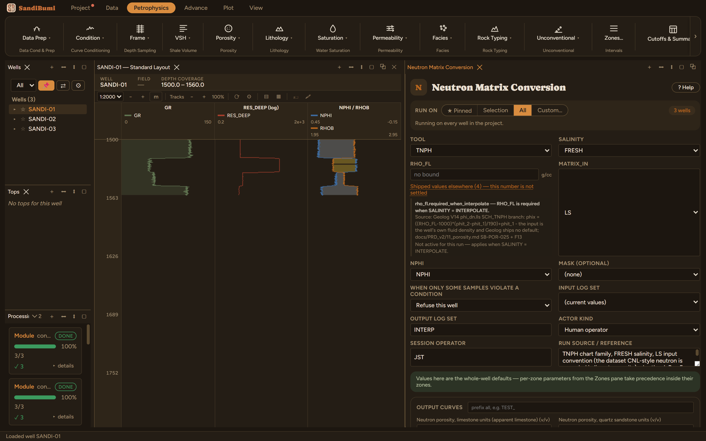
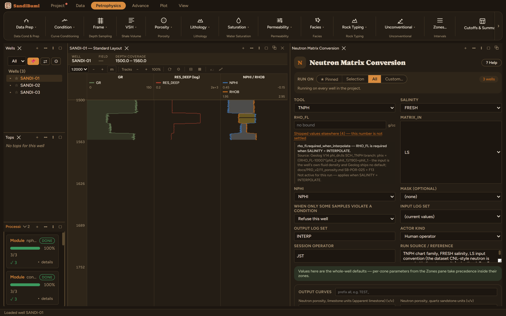

Neutron Matrix Conversion
Converts a neutron log recorded in one matrix convention into all three (limestone, sandstone, dolomite) using the chartbook porosity-equivalence curves: Por-5 for the CNL thermal tools, Por-4 for the epithermal APS and the sidewall SNP. Limestone units are the chart's apparent-limestone axis, on which calcite is the identity.
φa = the input matrix curve inverted back to the apparent-limestone axis NPHI_LS = φa; NPHI_SS = C_SS(φa); NPHI_DOL = C_DOL(φa) where C_SS and C_DOL are the chart's matrix curves; the input convention passes through unchanged
References
- Schlumberger Log Interpretation Charts, Por-5 (CNL thermal neutron) and Por-4 (APS epithermal and SNP), the porosity-equivalence curve families
Apply environmental corrections first: the charts assume corrected logs. SALINITY = INTERPOLATE evaluates the fresh and 250-kppm charts completely and interpolates the finished answers (TNPH family only).
What this is and when to reach for it
Neutron Matrix Conversion restates the neutron porosity log in all three matrix conventions at once: NPHI_LS (limestone units), NPHI_SS (quartz sandstone) and NPHI_DOL (dolomite). Reach for it whenever the neutron's recorded convention does not match the rock you are interpreting, which in sandstone basins is most of the time, because service companies traditionally record neutron porosity in limestone units.
The physics
A neutron tool measures hydrogen index, and the service company converts that to a porosity by assuming a matrix mineral. Assume limestone in a quartz sandstone and the number is biased low by roughly 0.03 to 0.05 v/v, because quartz and calcite moderate neutrons differently. The conversion between conventions is not a constant offset: it follows the tool vendor's chart family, curved at low porosity, which is why the module carries digitized chart curves (TOOL selects the family, SALINITY the borehole fluid case) rather than a single shift.
The picks and why
- TOOL TNPH and SALINITY FRESH: the chart family and fluid case that match how this dataset's CNL-style neutron was recorded.
- MATRIX_IN LS: the convention the input log is already in. This is a declaration about the delivery, not a preference, and the application treats it that way (see below).
What changes when you change MATRIX_IN is the whole meaning of the input, which is why the module refuses to let it disagree with what the curve itself declares. The size of the stake, measured on these wells: the median sandstone-units reading sits +0.046 v/v above the limestone-units reading (median NPHI_LS 0.335). Converting on the wrong scale would move every porosity by about that much, silently.
Step by step
- Open Petrophysics ▸ Data Prep ▸ Neutron Matrix Conversion.
- Confirm TOOL and SALINITY against the log header, and MATRIX_IN against the delivery's recorded convention.
- Fill the custody line and press Run Neutron Matrix Conversion.

Reading the result
3 clean, three output curves per well. Median NPHI_LS is 0.335 v/v and the median SS-minus-LS difference is +0.046 v/v, the limestone-assumption bias this module exists to remove. Downstream modules that take a neutron input in a specific convention now have all three to resolve from.

And the refusal, demonstrated live rather than described: this dataset's neutron curve carries a declared basis of LIMESTONE (set when the data was imported). Re-running with MATRIX_IN switched to SS reports 0 clean, 3 failed, each well refusing with:
the input neutron curve declares matrix basis 'LIMESTONE' but MATRIX_IN = SS: converting on the wrong scale is a silent ~0.04 v/v error, so nphimat refuses - align MATRIX_IN with the declaration, or correct the declaration (DEC-025)
That is the basis-consistency gate. The declaration lives on the curve, the option lives on the run, and where they disagree the application stops rather than guessing which one you meant.
QC and pitfalls
- Check the log header before declaring the input convention. LIME or LS in the neutron mnemonic's remarks is the usual tell; a matrix-units statement on the header beats a guess from the histogram.
- Run this before Data Conditioning Flags in sandstone: the crossover threshold there is the same size as the matrix bias corrected here.
- If the run refuses with the message above and the declaration is the wrong one, correct the declaration on the curve rather than fighting the option; the refusal names both routes.
What the application enforces
Everything below is generated from the same manifest the application builds this module’s pane from — descriptions, defaults, sources, ranges and pre-run checks here are exactly what the running application enforces.
Converts a neutron porosity log recorded in one matrix convention into all three (NPHI_LS / NPHI_SS / NPHI_DOL), using the chartbook porosity-equivalence curves: Por-5 for the CNL thermal tools (NPHI ratio method; TNPH environmentally corrected, with 0 and 250,000 ppm salinity variants) and Por-4 for the epithermal tools — APLC and FPLC (APS) plus the legacy sidewall SNP. Limestone units ARE apparent limestone porosity — the chart's x-axis, on which calcite is the identity — so an SS or DOL input is first inverted back to that axis, then read out along each matrix curve; the input convention passes through unchanged. Feed the output whose matrix matches your RHO_MA into density-neutron work (NPHI_SS with RHO_MA 2.65) — that removes the limestone-vs-sandstone convention offset before a sourced XOVER_MIN is applied. SALINITY picks the TNPH curve pair only; the other tools have a single chart curve. SALINITY = INTERPOLATE (SB-POR-025) evaluates the fresh and the 250-kppm chart COMPLETELY and interpolates the finished answers linearly on the declared RHO_FL, per Geolog's phi_dn two-call structure — TNPH only, since only that family carries both digitized curves. Apply environmental corrections (nphi_env_corr) before converting — the charts assume corrected logs. The limestone axis and dolomite curves are digitized to about -0.02..0.40; the sandstone curves leave the chart top at 40 pu true porosity (~0.32-0.36 apparent limestone), and beyond the data every curve is extended linearly on its end segment. Note NPHI_LS is also a common raw-log mnemonic: after a run, by-name lookups resolve the computed version first (the raw log keeps its provenance in the Curve Catalog).
Input curves
| Role | Description | Resolves to | Required | Notes |
|---|---|---|---|---|
| NPHI | Neutron porosity log (v/v, in MATRIX_IN units) | NPHI | yes | — |
Parameters
Whole-well defaults; per-zone values from the Zones pane take precedence inside their zones (except where a parameter is marked one-value-per-well).
RHO_FL (g/cc)
Borehole fluid density resolving the fresh/salt two-call interpolation (INTERPOLATE only)
- No shipped default. You supply this value, and a run entering it explicitly must also cite the source that covers it.
- Accepted range: 0.8 to 1.3 g/cc
- Competing shipped values exist for this parameter across installed tools (topic
fluid_density); the pane lists them with sources at the point of choice. - Checked before the run:
rho_fl.required_when_interpolate— RHO_FL is required when SALINITY = INTERPOLATE. Applies when: [object Object].Source: Geolog V14 phi_dn.lls SCH_TNPH branch: phix = ((RHO_FL-1000)*(phit_2-phit_1)/190)+phit_1 - the input is the well's own fluid density and Geolog ships no default; docs/PRD_v2/11_porosity.md SB-POR-025 + F13
Options
TOOL
Neutron measurement the log comes from (TNPH/NPHI: CNL thermal, Por-5; APLC/FPLC: APS epithermal and SNP: sidewall neutron, Por-4)
- Choices:
TNPHNPHIAPLCFPLCSNP
- Default:
TNPH
SALINITY
Formation salinity (TNPH curves only; SALT_250K = 250,000 ppm; INTERPOLATE = evaluate fresh and salt and interpolate on RHO_FL)
- Choices:
FRESHSALT_250KINTERPOLATE
- Default:
FRESH
MATRIX_IN
Matrix convention the input log is recorded in
- Choices:
LSSSDOL
- Default:
LS
Output curves
| Name | Description |
|---|---|
| NPHI_LS | Neutron porosity, limestone units (apparent limestone) |
| NPHI_SS | Neutron porosity, quartz sandstone units |
| NPHI_DOL | Neutron porosity, dolomite units |